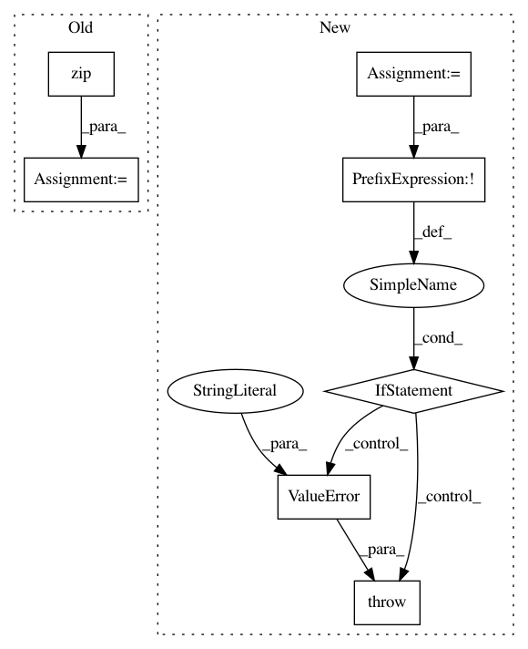

544875dd8a7fea49a86e5623d37274159b4ba7b5,skopt/optimizer/base.py,,base_minimize,#Any#Any#Any#Any#Any#Any#Any#Any#Any#Any#Any#Any#Any#Any#Any#Any#Any#,20
Before Change
raise ValueError(
"`y0` elements should be scalars")
for i, (x, y) in enumerate(zip(x0, y0)):
// on the last iteration fit a model so we can start predicting
// unless there are random points to be evaluated next
fit_model = i == len(x0) - 1 and n_random_starts == 0
optimizer.tell(x, y, fit=fit_model)
if callbacks:
result = create_result(optimizer.Xi, optimizer.yi,
optimizer.space, optimizer.rng,
specs, optimizer.models)
for c in callbacks:
c(result)
// Bayesian optimization loop
for n in range(n_calls - n_init_func_calls):
// fit model after last random iteration
fit_model = n >= n_random_starts - 1
next_x = optimizer.ask()
After Change
// User suggested points at which to evaluate the objective first
if x0 and y0 is None:
y0 = list(map(func, x0))
if not all(map(np.isscalar, y0)):
raise ValueError(
"`y0` elements should be scalars")
optimizer.tell(x0, y0)
if callbacks:
result = create_result(optimizer.Xi, optimizer.yi,
In pattern: SUPERPATTERN
Frequency: 3
Non-data size: 7
Instances
Project Name: scikit-optimize/scikit-optimize
Commit Name: 544875dd8a7fea49a86e5623d37274159b4ba7b5
Time: 2017-01-10
Author: betatim@gmail.com
File Name: skopt/optimizer/base.py
Class Name:
Method Name: base_minimize
Project Name: bokeh/bokeh
Commit Name: 5f6b5d3851d0b719f401eafbfc569420405d1ef3
Time: 2016-08-16
Author: canavandl@gmail.com
File Name: bokeh/models/formatters.py
Class Name: FuncTickFormatter
Method Name: from_py_func
Project Name: stanford-mast/nn_dataflow
Commit Name: ef4353bd24b9d781c2dfa9cd2146d9b87e63b6f1
Time: 2017-05-01
Author: mgao12@stanford.edu
File Name: nn_dataflow/Scheduling.py
Class Name: Scheduling
Method Name: schedule_search